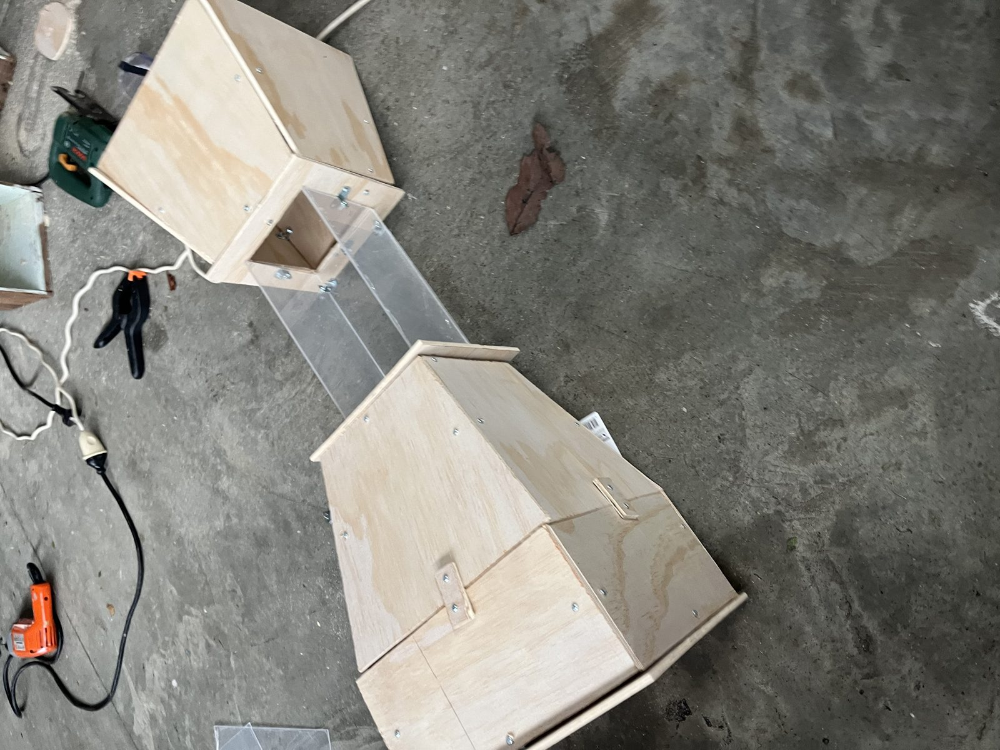
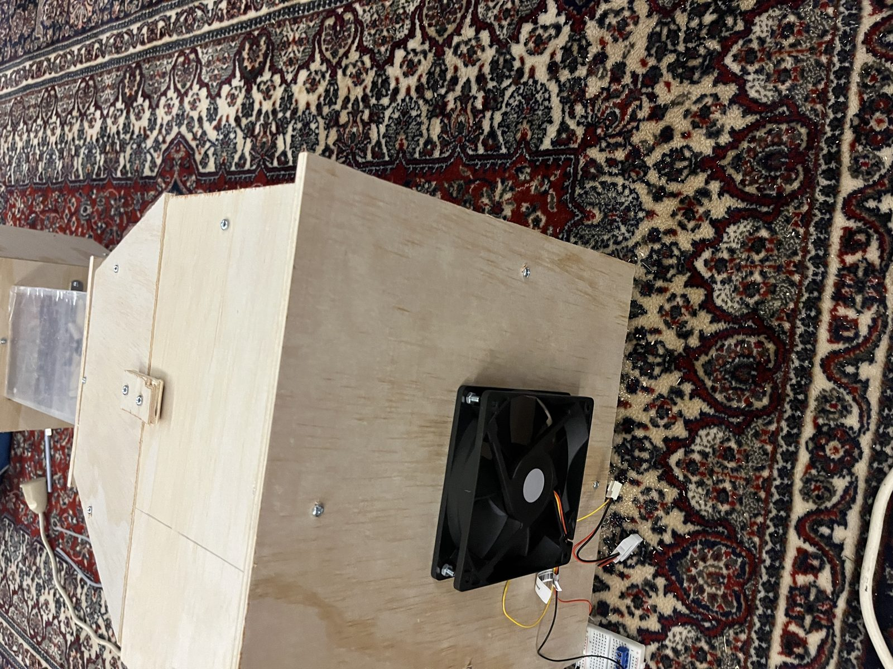

Mechatronics Engineering student with a passion for leading technical development in motorsport, aquatic/automotive innovation, and intelligent systems. I've built projects such as a functional wind tunnel from scratch, showcasing strengths in electronics, prototyping, and multidisciplinary engineering. I thrive in fast-paced, technical environments and bring a mix of creativity, precision, and hands-on execution to every project.
Designed and manufactured a desktop wind tunnel capable of testing airflow around objects, with a PID controller delivering precise, repeatable windspeed.
Windspeed is measured via a differential pressure sensor connected to a pitot tube, with air density (ρ) calculated in real time from a BME280 environmental sensor to convert the pressure reading into an accurate velocity figure. An ESP32 runs the control loop, comparing this measured velocity against a user-defined target windspeed (set over serial) and using the error as feedback for a PID algorithm that adjusts a MOSFET-driven 12V PC fan to hold the target. Power draw is monitored with an INA219 sensor, and the system runs an automatic zero-flow calibration on startup to cancel out sensor offset. The housing and test chamber were hand-cut from plywood and acrylic and designed in Fusion 360, assembled with brackets, nuts, and bolts over roughly two months.


Leading the physical design of an automated irrigation system, balancing water efficiency, component life cycle, and sustainability alongside the physical pipe layout.